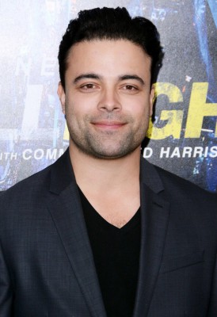
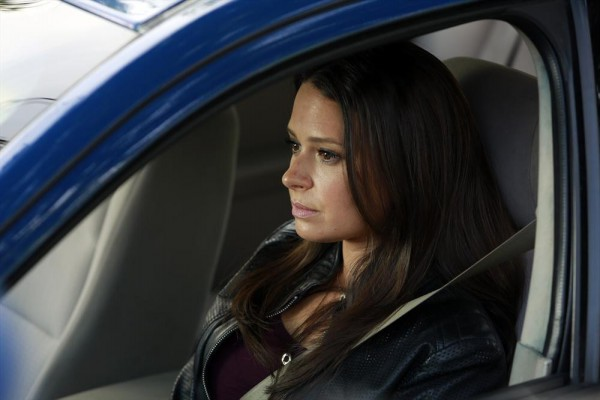

#1300 Side Effects - Tödliche Nebenwirkungen
Alternativ: Side Effects

 IMDB-Wertung: 7.1 / 10
IMDB-Wertung: 7.1 / 10  Metascore: 75
Metascore: 75 
Emily Taylor und Ehemann Martin führen ein glückliches Leben im Wohlstand, bis der Broker wegen Insiderhandels alles verliert - sogar die Freiheit. Nach seiner Verurteilung stürzt Emily nicht nur finanziell in ein tiefes Loch. Vier Jahre später wird Martin entlassen, doch diese Veränderung überfordert sie erneut vollends. Der ehrgeizige und äußerst erfolgreiche Psychiater Dr. Jonathan Banks nimmt sich ihrer an. Nachdem seine ersten Versuche, Emily zu stabilisieren, scheitern, verschreibt er ihr ein neues Medikament. Anfangs geht es ihr besser, doch schon bald erweisen sich die Nebenwirkungen als äußerst dramatisch. Alle Beteiligten geraten in einen unaufhaltsamen Strudel, der ihre Beziehungen, ihre Karrieren und, nach einem mysteriösen Todesfall, sogar ihre Leben bedroht. Fieberhaft sucht Banks nach Antworten. Doch als er sie findet, droht die von ihm aufgedeckte Wahrheit auch noch das Wenige zu zerstören, das ihm geblieben ist... und das ist nicht viel.
Jahr: 2013
Dauer: 106 Minuten
FSK: 12
Land: USA Studio: IITonspuren: DTS - ,
Untertitel: Deutsch,
Auflösung: 1080p (1920x1080) Größe: 7802 MB
Genre: Krimi, Drama, Mystery, Thriller
Regisseur:  Steven Soderbergh
Steven Soderbergh
Drehbuch: Scott Z. Burns
Soundtrack: Thomas Newman
Darsteller:
- Rooney Mara als Emily Taylor
- Carmen Pelaez als Prison Desk Guard
- Marin Ireland als Upset Visitor
 Channing Tatum als Martin Taylor
Channing Tatum als Martin Taylor- Polly Draper als Emily's Boss
 Ann Dowd als Martin's Mother
Ann Dowd als Martin's Mother Jude Law als Dr. Jonathan Banks
Jude Law als Dr. Jonathan Banks-  James Martinez als Police Officer at Hospital
- Vladimir Versailles als Augustin
- Michelle Vergara Moore als Joan
 Catherine Zeta-Jones als Dr. Victoria Siebert
Catherine Zeta-Jones als Dr. Victoria Siebert-  Katie Lowes als Conference Organizer
 David Costabile als Carl
David Costabile als Carl Mamie Gummer als Kayla
Mamie Gummer als Kayla- Victor Cruz als NYPD Officer Beahan
 Vinessa Shaw als Dierdre Banks
Vinessa Shaw als Dierdre Banks Elizabeth Rodriguez als Pharmacist
Elizabeth Rodriguez als Pharmacist- Peter Friedman als Banks Partner #1
- Andrea Bogart als Drug Rep
 Laila Robins als Banks Partner #2
Laila Robins als Banks Partner #2 Scott Shepherd als NYPD Detective
Scott Shepherd als NYPD Detective- Michael Nathanson als Assistant District Attorney
- Timothy Klein als Transporting Officer Klein
- Sheila Tapia als Emily's Attorney
- Steve Lacy als Reporter #2
 Devin Ratray als Banks Patient #3
Devin Ratray als Banks Patient #3- Russell G. Jones als Jeffrey Childs
- Munro M. Bonnell als Judge #1
- Susan Gross als Susan
- Debbie Friedlander als Wards Island Administrator
- Ilyana Kadushin als ECT Patient
- Johnny Sanchez als ECT Nurse
- Nicole Ansari-Cox als Disturbed Patient on Phone
- LaChanze als Wards Island Desk Nurse
- Alice Niedermair als Wards Island Nurse
 Craig muMs Grant als Wards Island Orderly
Craig muMs Grant als Wards Island Orderly- J. Claude Deering als Zach
 Kevin Cannon als Inmate , uncredited
Kevin Cannon als Inmate , uncredited- Carol Commissiong als NYPD Clerk , uncredited
- Laurence Covington als Wards Island Patient #1 , uncredited
- Tischa Culver als Nurse , uncredited
- Onika Day als Depressed Woman - Ablixa Commercial , uncredited
- Brian Distance als Wards Medical Staff #5 , uncredited
 John Farrer als Le Circ Restaurant Patron , uncredited
John Farrer als Le Circ Restaurant Patron , uncredited- David Fierro als Wards Island Patient 2 , uncredited
- Vince Hickman als Subway Passenger , uncredited
 Rosemary Howard als Prison Visitor , uncredited
Rosemary Howard als Prison Visitor , uncredited- Peter Iasillo Jr. als Inmate , uncredited
- Zivile Kaminskaite als Medical Conference Participant , uncredited
- Peter Y. Kim als Young Stockbroker , uncredited
Datei: X:\2013(N-Z)\Side Effects - Tödliche Nebenwirkungen (2013, FSK12, 1920x1080).mkv seit 16.06.2015
Festplatte: HD 2013(I-Z)-2014(A-Z)
 Es gibt insgesamt 133 Filme in der Gruppe '2013(N-Z)'
Es gibt insgesamt 133 Filme in der Gruppe '2013(N-Z)'